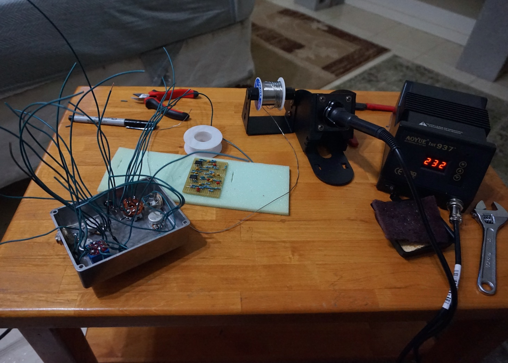
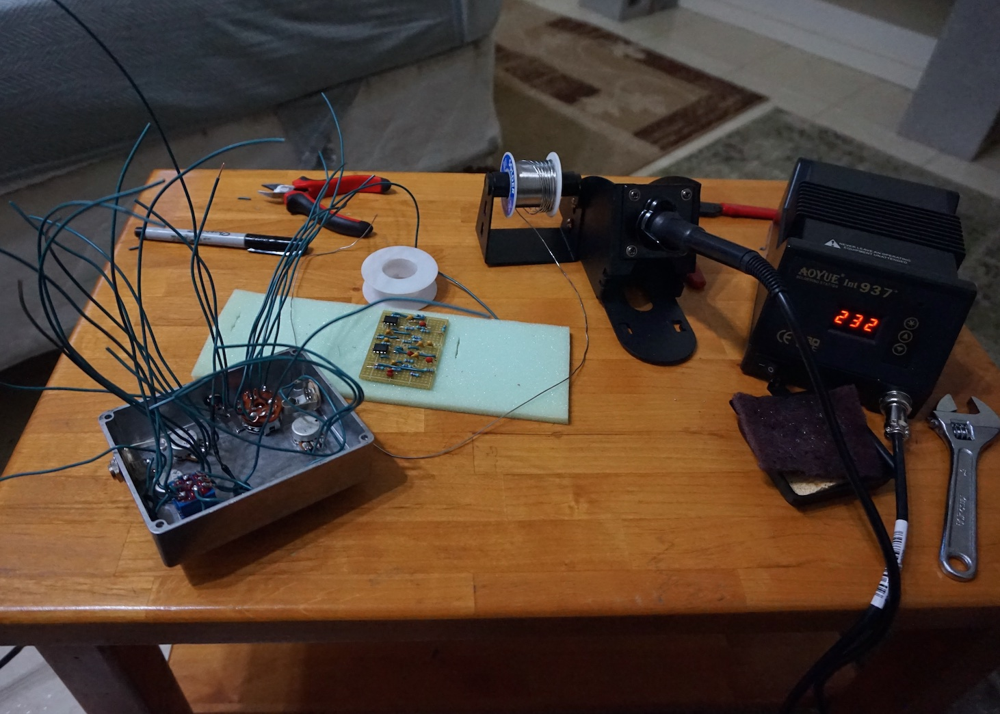

One evening a friend sent me an email late at night stating that after an extensive Internet search, he had finally found the guitar effects pedal used in the Wilco song "I'm them Man Who Loves You." The bad news, it was made by a company in Britain that went out of business in the 90's and thus goes for over $500 now. I knew the actual components inside such an effects pedal were dirt cheap, so I searched the Internet further and found a company that sells kits for building a clone for $90. A little more searching, and I found a blog with a veroboard layout of of the circuit. I am not much of a guitar player myself, but I wanted to gain some experience with soldering and my friend was down to foot the bill. $60 and and a lot of soldering later, I had a pedal.
This was the first pedal I built and I learned the importance of using as little wire as possible so as to avoid adding noise to the circuit. I also realized after first testing the pedal, that guitar effects power supplies are tip negative, plugging in a tip positive supply will blow the op-amps. Overall though, I was successfully able to replicate the exact sound I was looking for.